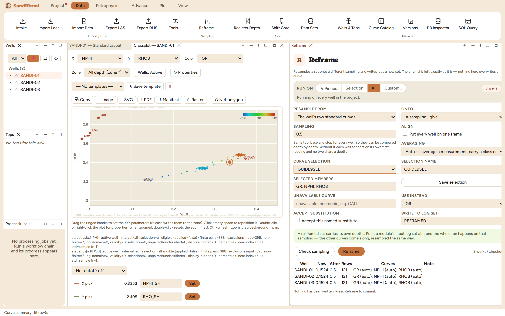

Reframe puts curves onto a different depth sampling and writes the result
as a new set, and it states its own non-destructive contract at the top of
the pane:
Resamples a set onto a different sampling and writes it as a new set. The
original is left exactly as it is — nothing here overwrites a curve.
Reach for it to coarsen a high-resolution delivery to a working step, to
regularize an irregular one, or to put several wells onto one shared frame
before field work that compares them depth by depth.
The pane

A 0.5 m resample of GR, NPHI and RHOB checked across the three
wells: 0.1524 m becomes 0.5 m, 121 rows each, and nothing has been
written yet.
Source: a versioned log set, an imported set, or the well's raw
standard curves. Onto: a step you give, regularize onto the
source's own median spacing, or borrow another well's or set's
frame.
Align puts every well on one top, base and step. The pane
states why it matters: "Same top, base and step for every well, so they
can be compared depth by depth. Without it each well anchors on its own
first reading and no two share a depth."
Averaging per curve: Auto (average a measurement, carry a class
curve by mode), or an explicit Mean / Geometric / Harmonic / Median /
Interpolate / Nearest / Mode.
Curves come from a named saved selection. Running without one
refuses: "Pick a named saved curve selection; no all-curves default is
applied." A resample of everything is a real decision, so it has to be
written down as a selection with a name.
A curve the source lacks refuses by name ("that source holds none of
the curves asked for"), and the substitution row lets you accept a
named substitute deliberately rather than having one guessed.
Step by step
Open Data ▸ Reframe…, pick the source, the target sampling and
the well scope; save a curve selection under a name and pick it.
Press Check sampling first. The verdict is a dry run: per well,
the current step, the step after, the row count, and which averaging
each curve will get, ending "Nothing has been written. Press Reframe to
commit."
Press Reframe. The run custody dialog asks who is writing and
on what basis ("These details travel with every output curve and into
its deliverables"), then the pane reports "3/3 well(s) written to
REFRAMED."
Reading the result
The counts close: 60 m of section at 0.5 m is 121 depths per well, and
the archive holds exactly 3 wells × 3 curves × 121 depths =
1089 rows for the new set (counted in the SQL panel with a
computed-curves-archive join). The re-framed set carries its own depths;
point a module's Input log set at it and the whole run happens on that
sampling. The original set is untouched, which is the point: a re-frame
through the ordinary write path would delete the readable interpretation,
so Reframe writes to the archive only.
QC and pitfalls
Coarsening is averaging; say which. Auto is right for most
logs, but a permeability being coarsened wants a geometric or harmonic
choice made on purpose, and a class curve must travel by mode, never by
mean.
Align across wells or anchor per well is a real choice.
Without Align, wells re-framed at the same step still land on depths
that never coincide, and every read here is an exact depth match.
Draw re-framed block curves as steps. A 0.5 m block average
shown as a diagonal line draws a gradient the data never measured.